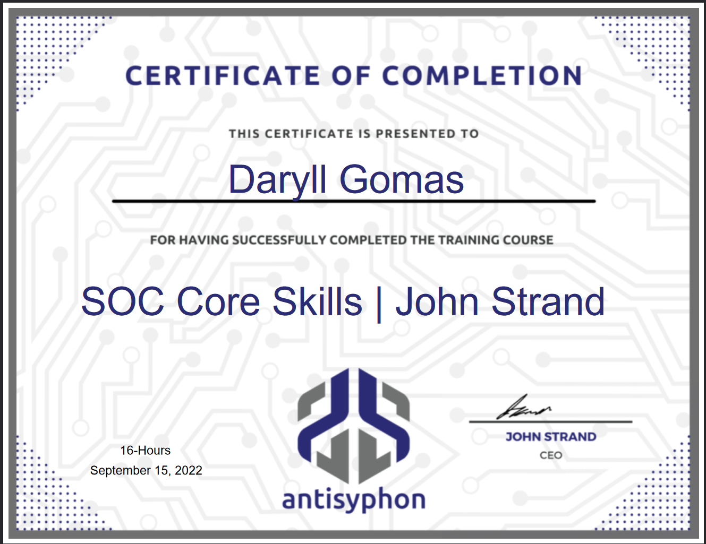
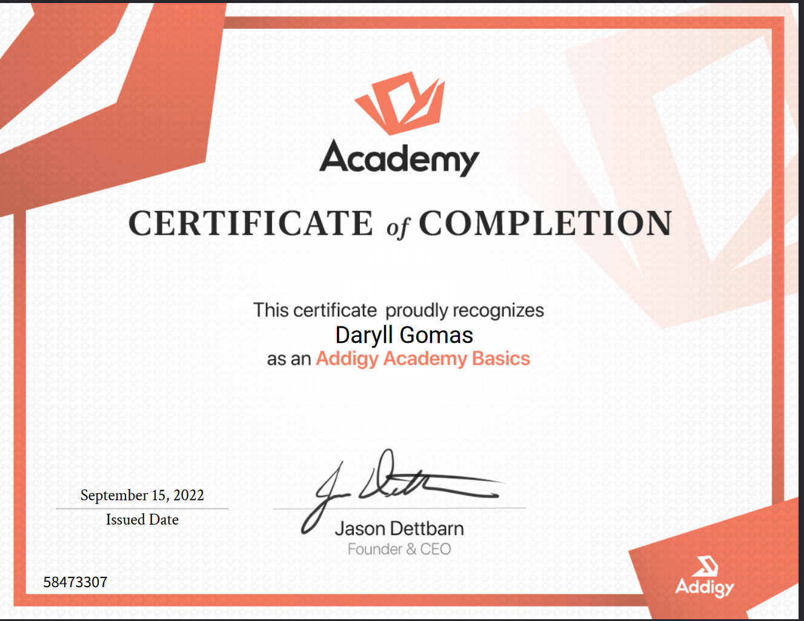
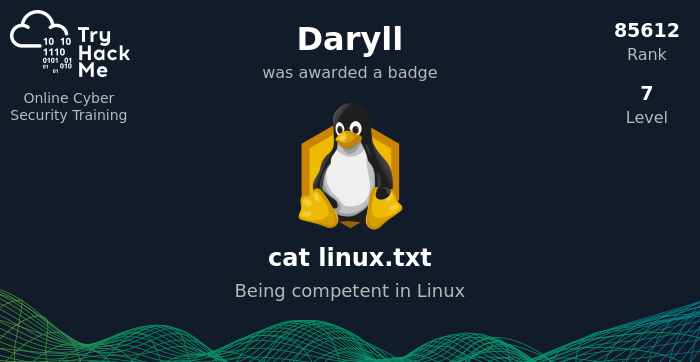

I created this page to give a more comprehensive display of my skills and what I am learning and doing in the tech industry and in life. If you are here as a result of reading my resume, welcome!
I have always existed at the cross section of soul and technology. I have always been passionate about new things and learning. This was a gift that was passed down to me from my father, who worked as a Sr Engineer at IBM since the 70's and is now a reverend. I got to experience the personal computer revolution that Steve Jobs and so many others brought us, first hand because of that. He always brought home the latest cutting-edge technologies before they went to market and I was able to play with them for fun, which gave me a head start into the world of technology, it made me a native before this digital land was even built and I have always existed almost primarily in it. That guidance and experience has provided me with a forward-looking perspective that has enabled me to have a long, rewarding career that I remain passionate about to this day. Even now at the age of 51, I could not be more excited and hopeful about the world to come and I try my best to keep my eyes on it and help bring us all there together, in my own ways. Some call me an optimist, some call me a dreamer, but in the words of John Lennon — "I know I'm not the only one."
What Drives Me
Important Things
Being Creative
Putting things together, even when it doesn't make sense to or you're told not to do it, can lead to the most rewarding experiences and outcomes.
Life Learning
The goal in life I feel should be to never stop learning and improving. It keeps you sharp and honestly, what's the point if you're not always growing?
Keeping Balance
As the world speeds up, don't forget to slow down. Taking a walk, hiking a mountain, balancing some rocks or just breathing can make all the difference.
Career Specialties
Skills
We are all works in progress. Right now, these are the areas in which I have experienced the most. Don't have to believe me, take ChatGPT and Claude's word for it.
85%Networking
75%CyberSecurity
80%Virtualization
70%Cloud
88%Systems Engineering
65%Blockchain
75%Artificial Intelligence
Verified Knowledge
Achievements



Tinker Town
Labs, Projects & Resources
Trading Ecosystem
trade-signal-backend
JavaScript
Algorithmic trading engine — 15+ strategies, Claude AI integration, paper trading & alerts.
Operating comfortably at architecture level. Not just configuring — thinking structurally.
SonicWall firewall configuration and management
VLAN design and network segmentation strategy
DNS architecture including Synology as backup DNS
MSP multi-site network awareness
Packet inspection concepts
Security-first network design philosophy
CyberSecurity
75% — Strong Defensive Mindset
Consistently thinking in terms of attack surface and defense. Strong blue-team architecture brain.
2FA enforcement across M365 and Authenticator
Firewall upgrades for security posture improvement
Vulnerability scanning VM architecture
SIEM implementation and discussion
Zero-cloud AI inference for data control
Incident response mindset — dealt with real attacks
Virtualization
80% — Infrastructure Fluent
Understanding virtualization as infrastructure, not just lab usage.
Hyper-V including performance troubleshooting
Linux VM deployment and management
Synology VM environments
Multi-GPU LLM servers in Docker
Cross-platform Mac/Windows virtualization needs
Cloud
70% — Hybrid-Heavy Strength
Leaning hybrid/on-prem secure architecture more than pure cloud-native SaaS engineering.
Microsoft 365 tenant management
Entra integration concepts
Multi-tenant management strategy
Authentication models and identity sync
Hybrid cloud architecture planning
Systems Engineering
88% — Core Competency
This is not IT support. This is infrastructure systems engineering. 25+ years of cross-platform systems work.
Windows, macOS, and Linux administration
DNS and domain consolidation planning
Infrastructure modernization strategy
RAID decisions and storage architecture
Identity architecture and access management
Automation mindset across all platforms
Blockchain
65% — Investor + Systems Awareness
Understanding the ecosystem at a structural and capital allocation level.
What a blockchain is (distributed ledger, consensus, immutability)
Difference between Bitcoin-style monetary chains and smart contract platforms
Market cycles and volatility mechanics
Token economics at a macro level
Layer 1 vs Layer 2 concepts
Custody risks (self-custody vs exchange risk)
Why decentralization matters (and where it's overstated)
Artificial Intelligence
75% — Builder + Deployer
Not just using AI — deploying it on infrastructure, building with it, and thinking about where it's going.
LLM deployment on local infrastructure
Multi-GPU server builds for AI inference
AI-assisted automation and workflow design
Secure on-prem AI for data sovereignty
Strategic understanding of the AI landscape
Schwab API
Data Source
The primary external data feed powering the entire trading ecosystem. Provides real-time and historical market data across multiple asset classes.
Real-time price data for stocks, ETFs, and options
Historical OHLCV data for backtesting strategies
Options chains with Greeks, IV, and open interest
Account and position data for portfolio tracking
Feeds into → DATA hub, Options-CalcExternal Service
Scout-Win
Intelligence Gathering
Automated market reconnaissance system that scrapes multiple sources and generates a structured intelligence dashboard for daily trading decisions.
Scrapes X/Twitter for market sentiment and breaking news
Monitors YouTube for analyst commentary and trade ideas
Aggregates RSS feeds from financial news sources
Generates a consolidated dashboard (dash.html) for morning prep
Feeds into → DATA hub, Trading PrepPrivate Repository
DATA
Central Hub — The Backbone
The shared data backbone that every other tool in the ecosystem queries. Collects, processes, and stores market data from multiple sources, then exposes it via REST API.
Tracks 33 symbols across ETFs and individual stocks
Stores price data, IV/HV, VIX, and volume in SQLite
Processes RSS feeds and YouTube content metadata
REST API (port 3000/3443) for all downstream tools
Matrix-style web interface for direct data exploration
Every tool in the ecosystem connects herePrivate Repository
Signal Engine
trade-signal-backend — Algorithmic Core
The algorithmic trading engine at the heart of the platform. Runs 15+ strategies with multi-timeframe analysis and Claude AI integration for intelligent trade vetting.
15+ strategies: ORB, Golden Setup, VWAP Reversion, Mean Reversion, and more
Multi-timeframe analysis across intraday and swing periods
Claude AI integration for trade veto and learning loop
Paper trading with realistic slippage modeling
Real-time alerts via SSE, Discord, and Telegram
SQLite backend with 40+ tables tracking strategy performance
Queries ← DATA hub | Outputs → Wingman, AlertsPrivate Repository
Wingman
AI-Assisted Trading Workstation
The comprehensive trading dashboard and daily command center. Combines all strategies, analysis tools, and market data into a single AI-assisted workstation.
Full web dashboard with strategy views and daily workflows
VWAP + Divergence integrated trading system
Built-in backtesting tools for strategy validation
Earnings scanner for upcoming catalysts
Daily workflow pages for structured pre-market and EOD routines
Queries ← DATA hub, Signal EnginePrivate Repository
Options-Calc
Gamma Exposure Analysis
Schwab Trading Dashboard focused on gamma exposure (GEX) analysis. Shows where market makers are positioned and where price is likely to pin, reverse, or accelerate.
Dealer positioning and gamma exposure visualization
Call/put walls and gamma flip level detection
0DTE expected move calculations
AI-powered (Claude) trade setup suggestions
Real-time data streaming from Schwab API + Yahoo
Queries ← DATA hub, Schwab APIPrivate Repository
Divergence Scanner
Inter-Market Analysis
Real-time scanner that detects relative strength shifts, correlation breakdowns, and sector rotation signals across markets. Catches moves before they become obvious.
Automated pre-market and end-of-day research report generator. Uses Claude Code to synthesize market data, signals, and intelligence into actionable daily briefs.
Automated pre-market morning research reports
End-of-day recap and performance analysis
Powered by Claude Code with custom prompt templates
Identifies trading opportunities during corporate buyback blackout periods — windows when companies halt share repurchases before earnings, creating predictable price patterns.
Analyzes historical price data during blackout windows
Detects predictable patterns when large buyback programs pause
Quantifies edge from reduced institutional buying pressure
A public-facing GitHub Pages site serving a market intelligence dashboard with a cosmic visual theme. Displays curated research and market data for external consumption.
Lightweight monitoring dashboard that watches the health and uptime of all trading platform services. Ensures the ecosystem stays operational during market hours.
Service health checks across the platform
Real-time status and uptime tracking
Node.js/TypeScript backend
Private Repository
MrCrabs
Investment Research Dashboard
A single-page investment research dashboard displaying real-time market sentiment, metrics, and research signals. Named with the right energy for the mission.
Market sentiment cards for equities, crypto, liquidity, macro
Structured research data and signal tracking
YAML-based master plan with real-time market signals
A multi-division technology company spanning investment operations, IT consulting, and autonomous fleet management. Built on AI-native principles with 25+ years of technology expertise.
BigPic Capital — AI-powered investment research & trading
BigPic Technology — IT consulting & security services
BigPic CyberCab — autonomous vehicle fleet (in development)
An AI-native investment operating system that replicates a full institutional team — research, macro strategy, quant analysis, risk management, and trading execution — with AI agents and automated pipelines.
HERMES trading execution agent with verified strategy library
TERMINUS price level engine aggregating 11 data sources
Wingman market intelligence with real-time scanner APIs
9 completed sector investment theses with interactive reports
Remote IT consulting and automation services specializing in AI-augmented infrastructure, cloud advisory, and productized security assessments for the SMB market.
A venture focused on autonomous vehicle fleet ownership. Building financial models and operational plans for Tesla CyberCab fleet deployment on the autonomous ride-hailing network.
Unit economics modeling across utilization scenarios
Revenue projections: $36K–$78K gross per vehicle per year
Phased deployment: research → first vehicle → fleet scaling
Currently in Research & Planning Phase
Trading Systems
HERMES · TERMINUS · Strategies
The execution layer of BigPic Capital. HERMES is the trading agent with a comprehensive methodology, TERMINUS identifies price levels from 11 sources, and the strategy library holds backtested edges.
HERMES — 83K-word trading methodology with execution rules
Mean Reversion v4: 81.2% win rate over 203 trades (10yr backtest)
Buyback Blackout: 77% win rate, verified across 106 events
7-dimension Convergence scoring engine for capital deployment
Internal Operations
Market Intelligence
Wingman · Scanners · APIs
Real-time market intelligence infrastructure. Wingman provides session-aware market analysis while remote scanner APIs deliver live options flow, gamma data, and sentiment fusion scores.
Wingman — living market regime tracking and trading rules
Options API — real-time quotes, gamma, IV, flow analysis
Intel API — market outlook, sentiment scores, trade journal
15 Claude AI skills for session workflow automation
Internal Operations
Research & Publishing
Sector Theses · Reports · Briefs
A complete research pipeline producing institutional-quality investment research across 9 high-growth sectors, weekly macro reports, and daily pre-market intelligence briefs.
A productized network security assessment platform targeting the SMB market gap between basic scanning and enterprise pentest firms. Fully automated multi-phase engagements with compliance-mapped reporting.
Service tiers: External ($2.5K), Internal ($5K), Comprehensive ($10K+)
Financial modeling for the CyberCab fleet venture. Revenue projections, cost analysis, and ROI scenarios across utilization rates, fare structures, and market conditions.
Vehicle cost under $30K with 75/25 owner/Tesla revenue split
A hands-free Linux voice assistant that lets you speak commands and hear Claude's responses. Push-to-talk interface powered by cutting-edge speech AI.
Claude Agent SDK for AI-powered responses
Whisper STT for speech-to-text transcription
Silero VAD for voice activity detection
Kokoro TTS in Docker for natural voice output
Push-to-talk interface for clean interactions
Private Repository
VideoToText
Video Transcription Tool
Windows GUI and CLI tool that downloads videos from X/Twitter and transcribes them to text using OpenAI Whisper. Built for capturing and processing video content at scale.
Architectural blueprint for a vibe-coding freelancer collective — a Service DAO that combines human freelancers with autonomous AI agent swarms to deliver software at scale.
Service DAO organizational model (Raid Guild, Vector DAO precedents)
Hybrid workforce: human freelancers + AI agent swarms
A WebGL-powered portal that serves as the hub for three interconnected interactive experiences — Zen, Ancients, and BreakTheCode. Features cosmic backgrounds, 3D sacred geometry, and floating mandalas.
WebGL cosmic background with particle effects
3D sacred geometry navigation elements
Interactive book as the central portal
Links to Zen, Ancients, and BreakTheCode sub-projects
An immersive Zen meditation website presenting the classic story "Enter Zen From There." A full digital meditation space with multiple interactive elements.
Guided breathing exercises with visual feedback
Cosmic meditation mode with ambient visuals
Interactive zen garden — raking, placing stones, koi fish
An interactive web-based history timeline spanning prehistoric to modern eras, exploring alternative theories about pre-cataclysm advanced civilizations through an immersive WebGL experience.
An immersive interactive digital book exploring consciousness expansion and personal transformation. Features a cosmic theme with animated visuals across 6 chapters.
Animated DNA helix and starfield backgrounds
6 chapters on awakening and breaking unconscious patterns
Deep analysis of X's open-sourced "For You" feed algorithm. Decompiled the scoring formula and extracted actionable posting strategies to maximize reach.
Research and vision documents proposing a privacy-preserving bridge between Zcash and Solana — combining Zcash's privacy technology with Solana's speed and throughput.
Privacy-preserving cross-chain bridge concept
Zcash shielded transactions + Solana speed
Multi-AI research synthesis (Claude, Grok, Gemini)
A resume deployed as a serverless API on Azure Functions. Demonstrates cloud infrastructure-as-code with automated CI/CD — a practical cloud engineering project.
Personal coding sandbox with hand-coded practice projects organized by platform. A living repository of learning, exercises, and experiments across languages.